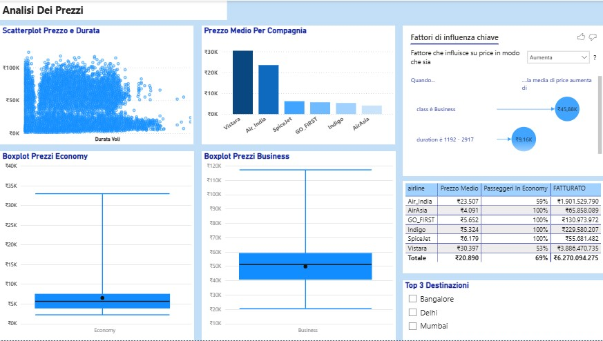
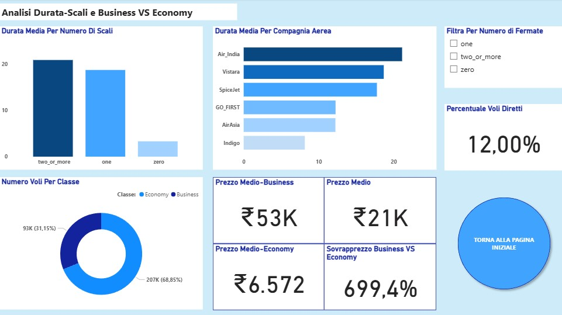

Description
PFor this project, I used a database covering domestic flights in India over the course of one year. The primary objective of the analysis is to study the key influencing factors within this sector. First, the focus is on the average flight price and the average route duration, two crucial factors for both passengers and airlines. Next, the analysis examines the comparison between different airlines and travel classes, to highlight any significant differences in terms of cost and travel time. Another important aspect is the study of the busiest routes, which allows the identification of the most frequently used air connections.
Overview Page

On this first page of the report, several general indicators related to the analyzed database are presented. In particular, these include the total number of flights, the average ticket price, and the average flight duration, which is strongly influenced by the prevalence of Economy class connections that often include routes with intermediate stops. The analysis shows that approximately 69% of passengers traveled in Economy, confirming that this service type represents the most common and accessible choice within the Indian domestic market.
Through the interactive map and the horizontal bar chart, it is possible to observe the distribution of air traffic across the country’s main airports. Delhi and Mumbai clearly stand out as the two primary hubs. Finally, the pie chart illustrates the market shares of the different airlines. Using the filter available at the top right, the visualization can be customized to segment market shares by service class (Business or Economy), providing a more detailed overview.
Price Trends

On this second page of the report, the focus is on analyzing flight prices. From the outset, a clear distinction between Economy and Business class becomes evident. As expected, the ticket price is strongly influenced not only by the chosen class but also by the overall flight duration, which significantly affects the final fare, even though the scatter plot shows numerous outliers.
The observation of the two boxplots dedicated to prices highlights an important aspect: while Economy class prices show a more compact distribution, price variability in the Business segment is considerably higher. This phenomenon can be explained by the fact that Business tickets include a wider range of additional services.
Duration

On this final page of the report, the analysis focuses on flight duration. A first striking element is the low percentage of direct flights, which account for only 12% of the total. This figure suggests that most domestic connections in India involve at least one stopover, with a consequent impact on overall travel times.
A second noteworthy aspect concerns the differences observed among the various airlines: some show significantly higher average travel times compared to others, reflecting different operational strategies and distinct market positioning.
The page also includes interactive filtering tools for the number of stopovers and service class, allowing users to customize the analysis and gain a more detailed view of industry dynamics.